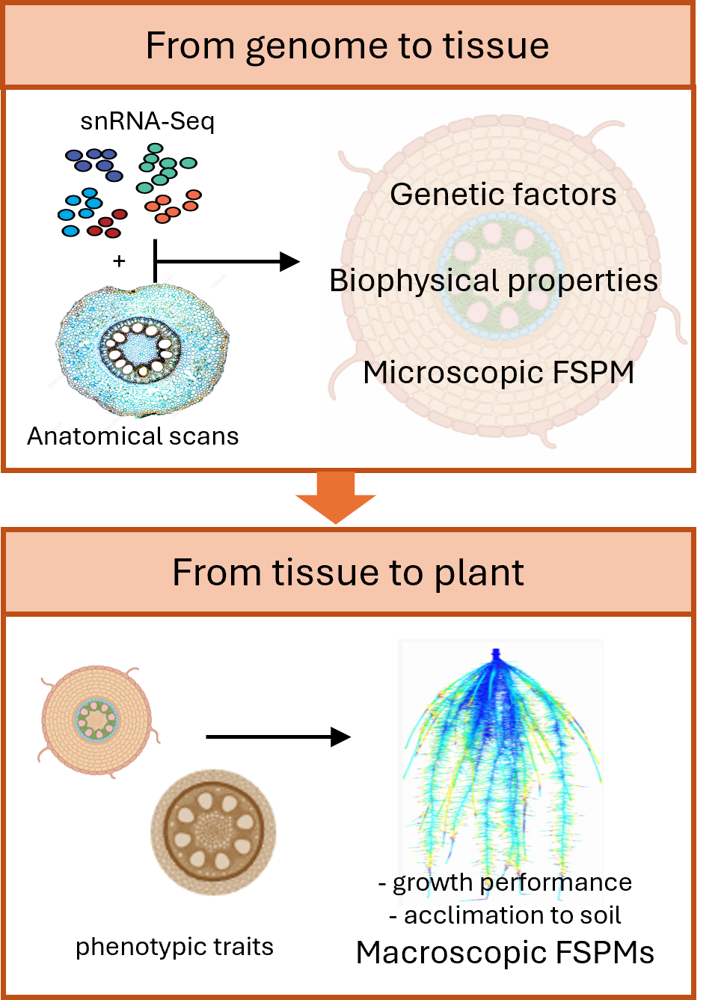

Postdoctoral position available in the Mironova Lab
We are looking for a postdoctoral researcher to join the Mironova Lab as part of a fully funded NWO project, "One cell, three barrier fates - How do cereals use root barriers to survive and thrive?" The project focuses on how cereal roots use barrier-forming cells to cope with challenging soil conditions associated with drought, including soil compaction and parasitic interactions. The successful candidate will contribute to modelling data across biological scales, linking quantitative analysis with developmental and physiological processes in cereal roots. The position is offered as a 1+2 year contract, with a planned start in late 2026 or early 2027. We are seeking applicants with a PhD in plant biology; candidates in the final stage of thesis writing are also welcome to apply. Experience with modelling approaches such as ODE, PDE, or FSPM is mandatory. For informal inquiries, please contact the PI by email at victoria.mironova [at] ru.nl.